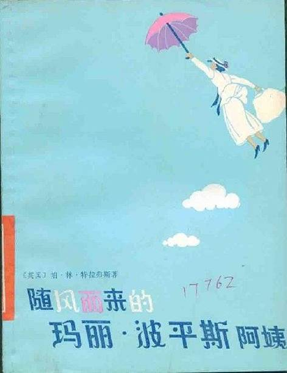

目录
Ø 东京都知事
Ø 玛丽·波平斯
Ø 纪伊国屋书店
Ø 棒球打击场
Ø 全部gift
出典：
东京都知事，是日本东京都的行政首长，为特别职地方公务员，由18岁以上之东京都民以选举方式产生，四年为一任，以指挥管理东京都厅下属总数约16万5千名的职员，维持东京都的行政运作。
这个角色在Liar-soft的第一部作品「ちょーイタ」和第三部作品「ぶるまー２０００」中都有登场，名字是“けーこちゃん”（橘惠子）。Forest这部作品发售于2004年，所以可以推测4年前Governor参加的最后一个谜语年是「ぶるまー２０００」所在的2000年。
关于她和前作的详细关联，请见第29章：Tokyo Government Office
Figure 1. 东京都知事
玛丽·波平斯，出自《随风而来的玛丽波平斯阿姨》，是来自澳大利亚的英国作家P·L·特拉弗斯（P. L. Travers）的代表作。
作为典型的英国保姆，玛丽·波平斯是位略显严厉却又充满爱心的女人。她通常运用魔术和自我控制来照顾的孩子们。她会随带随性的帽子和鹦鹉伞，无论去哪里郊游，她也有能力转移到她想要的地方。她对孩子很友善，但在需要时会对他们很强硬。评价称她是一位“在各方面都非常完美的女性”。

Figure 2. 《随风而来的玛丽波平斯阿姨》的图书封面
根据背景来判断，灰流所在的书店应该是：纪伊国屋书店新宿本店。
纪伊国屋书店是日本最大的连锁书店之一，创业于1927年1月22日。而新宿总店是纪伊国屋书店的第一号店，书店身处繁华商业街上，算上地下共有9层，大约有6000平方米，是新宿地区最大的书店。
Figure 3. 纪伊国屋书店新宿本店
位于新宿歌舞伎町的，有名棒球打击场，日文是“新宿バッティングセンター”。
Figure 4. 新宿棒球打击场
帕兰蒂魔石，可以看到世界任何一个角落的景象。现在的帕兰蒂魔石更加先进，做成了手机的样子，可以用于收发各种消息，也可以让东京都知事监视主角们的一举一动。出自《指环王》。在原作中，曾经一共有7个帕兰蒂魔石，但有很多都丢失了。
魔术师的gift。 采取高顶礼帽或高顶礼帽绅士的形式，这个gift跟九月在序章戴上大礼帽，扮演疯帽匠（Mad Hatter）相关。名字出自被誉为史上最伟大魔术师、脱逃术师及特技表演者哈利·胡迪尼。
信使的gift。 形象是野兔，获得履行信使职责的能力，可以快速传递消息。这个gift跟序章刈谷扮演三月兔（March Hare）相关，三月兔在《镜中的爱丽丝》中也以信使的身份出现。
做白日梦的gift……这个gift跟最开始黛在序章扮演睡鼠（Dormouse）相关，拥有做梦的能力，在《镜中的爱丽丝》中这个能力看起来很蠢，但是实际上很有用。